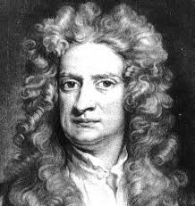

| Home | About Us | Contact Us | FAQ | |||||

Principle |
About PrincipleSir Isaac Newton FRS (25 December 1642 – 20 March 1726/27[a]) was an English polymath active as a mathematician, physicist, astronomer, alchemist, theologian, and author who was described in his time as a natural philosopher.[7] He was a key figure in the Scientific Revolution and the Enlightenment that followed. His pioneering book Philosophiæ Naturalis Principia Mathematica (Mathematical Principles of Natural Philosophy), first published in 1687, consolidated many previous results and established classical mechanics.[8][9] Newton also made seminal contributions to optics, and shares credit with German mathematician Gottfried Wilhelm Leibniz for formulating infinitesimal calculus, though he developed calculus years before Leibniz.[10][11] In the Principia, Newton formulated the laws of motion and universal gravitation that formed the dominant scientific viewpoint for centuries until it was superseded by the theory of relativity. He used his mathematical description of gravity to derive Kepler's laws of planetary motion, account for tides, the trajectories of comets, the precession of the equinoxes and other phenomena, eradicating doubt about the Solar System's heliocentricity.[12] He demonstrated that the motion of objects on Earth and celestial bodies could be accounted for by the same principles. Newton's inference that the Earth is an oblate spheroid was later confirmed by the geodetic measurements of Maupertuis, La Condamine, and others, convincing most European scientists of the superiority of Newtonian mechanics over earlier systems. He built the first practical reflecting telescope and developed a sophisticated theory of colour based on the observation that a prism separates white light into the colours of the visible spectrum. His work on light was collected in his highly influential book Opticks, published in 1704. He formulated an empirical law of cooling, which was the first heat transfer formulation,[13] made the first theoretical calculation of the speed of sound, and introduced the notion of a Newtonian fluid. Furthermore, he made early investigations into electricity,[14][15] with an idea from his book Opticks arguably the beginning of the field theory of the electric force.[16] In addition to his work on calculus, as a mathematician, he contributed to the study of power series, generalised the binomial theorem to non-integer exponents, developed a method for approximating the roots of a function, and classified most of the cubic plane curves. Newton was a fellow of Trinity College and the second Lucasian Professor of Mathematics at the University of Cambridge. He was a devout but unorthodox Christian who privately rejected the doctrine of the Trinity. He refused to take holy orders in the Church of England, unlike most members of the Cambridge faculty of the day. Beyond his work on the mathematical sciences, Newton dedicated much of his time to the study of alchemy and biblical chronology, but most of his work in those areas remained unpublished until long after his death. Politically and personally tied to the Whig party, Newton served two brief terms as Member of Parliament for the University of Cambridge, in 1689–1690 and 1701–1702. He was knighted by Queen Anne in 1705 and spent the last three decades of his life in London, serving as Warden (1696–1699) and Master (1699–1727) of the Royal Mint, as well as president of the Royal Society (1703–1727). |
||||